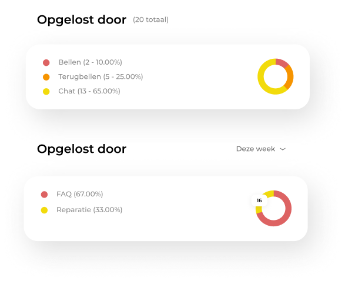
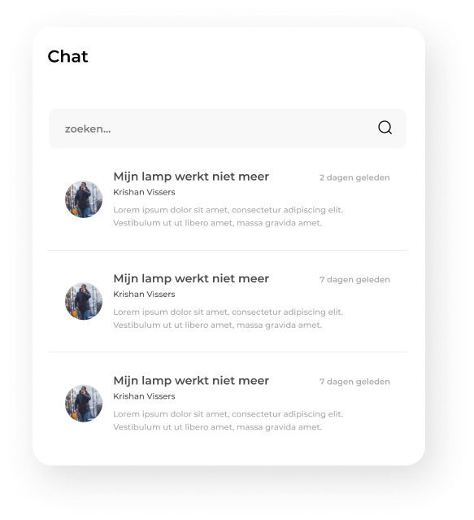

Wil jij ook kosten besparen? De Support app biedt jou de oplossing om je processen efficiënter in te richten. Dit leidt tot minder telefoonverkeer. Daarnaast kun je door de digitalisering je personeel op een slimmere en efficiëntere manier inzetten. Dit resulteert in een forse besparing op personeelskosten.

De Support App biedt de mogelijkheid tot het ontwikkelen van jouw eigen digitale platform. Het is toepasbaar op de branche van je organisatie en kan helemaal naar jouw wens worden samengesteld. Jouw bedrijfslogo’s, huisstijl en kleuren kunnen op jouw verzoek door ons worden toegevoegd. Bekijk ons portfolio voor een impressie.
